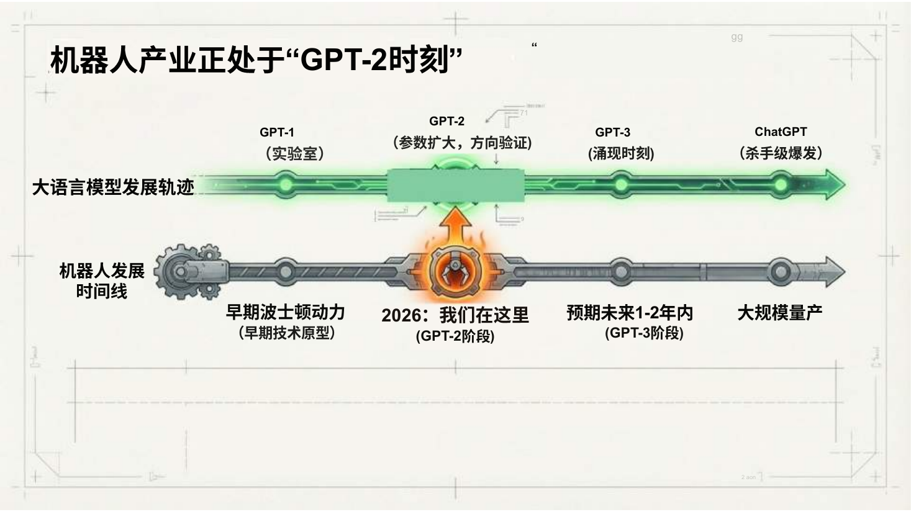
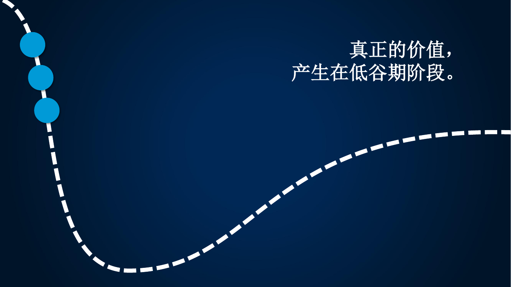

CG
A · I · R E · A R C H I T E C T
AI 如何
重构智慧场景
AI × BIG DATA × SCENE RE-ARCHITECT
SPEAKER
Chen Gao · 高 晨
EXPERTISE
Big Data & AI
VENUE
Robo Space · 开业首秀
OPENING · 开场
你今天看到的，是机器人在炒菜。
但真正的革命，
不在机械臂上，
而在它背后做决策的 AI 上。
但真正的革命，
不在机械臂上，
而在它背后做决策的 AI 上。
// 机器人是"执行"，AI 是"重构" — 这不是提效，是一次行业级的颠覆。
// 接下来 15 分钟，我讲讲怎么把每一个场景重做一遍。
// 接下来 15 分钟，我讲讲怎么把每一个场景重做一遍。
FUNDAMENTALS · AI 的底层支柱
AI 的 三大要素 是什么?
?
ELEMENT 01
01 / ALGORITHM
⌬
算法
Algorithm
- 从规则到学习,从专才到通用
- 大模型 · 强化学习 · VLA
- 开源化、平民化
?
ELEMENT 02
02 / COMPUTE
▤
算力
Compute
- GPU / TPU · 分布式训练
- 云计算 · 端侧推理
- 成本 ↓ · 规模 ↑
?
ELEMENT 03
03 / DATA
◈
数据
Data
- 训练 · 标注 · 治理
- 场景 · 行业 · 私域
- "AI 的燃料"
PRESS SPACE TO REVEAL · 按 空格 揭晓
算法与算力日渐同质化的今天 — 数据 才是真正的护城河。
这也是我的旅程: 从 数据 出发,通向 AI。
这也是我的旅程: 从 数据 出发,通向 AI。
SPEAKER · 关于我
高 晨
CHEN GAO
▸ VP · Big Data & AI · GLP（普洛斯）现任
▸ ex-CDO（Chief Data Officer）· Decathlon China · 迪卡侬
▸ ex-Alibaba · 阿里 · 盒马 / 夸克 / 阿里云 / 天猫
▸ ex-J&J Ethicon · 强生 · ex-Novartis · 诺华
▸ ex-University of Washington · 华盛顿大学
▸ ex-CDO（Chief Data Officer）· Decathlon China · 迪卡侬
▸ ex-Alibaba · 阿里 · 盒马 / 夸克 / 阿里云 / 天猫
▸ ex-J&J Ethicon · 强生 · ex-Novartis · 诺华
▸ ex-University of Washington · 华盛顿大学
π
π-SHAPED EXPERT
跨 10 大行业,在 大数据 与 AI
两条专业线上 15+ 年 深耕。
两条专业线上 15+ 年 深耕。
GLP · 普洛斯
物流地产
REAL ESTATE
新能源
NEW ENERGY
IDC
DATA CENTER
金融
FINANCE
零售
Decathlon
电商
盒马 · 天猫
互联网
夸克 · UC
云计算
阿里云
医疗
J&J · Novartis
教育
U. of Washington
BIG DATA大数据
- 数据基座 / 数据中台
- 多维数据建模
- BI & Analytics
- 商品 / 用户 / 销售分析
- 归因分析 · 预测分析
- 数据治理 · 合规
AI人工智能
- AI 中台 · 战略路线图
- RAG · Agent · Skill
- Machine Learning · Deep Learning
- 预测 · 选址 · 定价 · 排班
- Embedding · Fine-tuning · MCP
- AI 合规治理
一横 = 10 大行业 · 两纵 = 大数据 · AI
INDUSTRY MOMENT · 行业坐标
我们站在 哪一个 时刻?
GPT-2 时刻
机器人产业正处在大语言模型的 "GPT-2 阶段" ——
预期 1–2 年内进入 GPT-3 时刻,之后大规模量产。
1000万
2030 制造业工人缺口
5–7万亿$
2050 机器人市场规模
<20家
2028 正式上线公司
GARTNER · 2026

EVOLUTION · 大脑五代演进
机器人是 手 — AI 是脑
机器人的"大脑"经历了五代进化:
从 1961 年的可编程执行器,
一路走到能看、能想、能动手的 VLA 大模型时代。
从 1961 年的可编程执行器,
一路走到能看、能想、能动手的 VLA 大模型时代。
1961
可编程机器人
2010
模仿学习 · Google Brain
2016
强化学习 · AlphaGo Zero
2023+
VLA 大模型时代
GARTNER · 2026

INDUSTRY EVOLUTION · 行业演进
从对话到 Agent 协作 — 仅用 三 年
每一次能力跃迁,都把"AI 能做什么"的边界推得更远。
2023 · Q1
对话级交互
大模型元年。语言理解和生成惊艳,长上下文记忆。
2024 · Q1
推理链原生化
回答前先"思考",处理数学和逻辑推理。
2024 · Q3
工具调用
调用 API · 搜索 · RAG 接入企业知识库,幻觉显著下降。
2025 · Q1
Agent 降临
能拆解任务并逐步执行、最后交付结果的智能体单元。
2025 · Q4
自我纠错 / 反思
实时评估、自动修正计划,业务成功率大幅提高。
2026 · 往后
全面落地
多 Agent 协同、自主进化,重塑每一条业务链。
AI 不再是未来 —— 它是现在。能力已就绪,落地已证明 ——
唯一的问题是: 谁先跑起来。
唯一的问题是: 谁先跑起来。
NEW VOCABULARY · 新词层出不穷
AI 给我们带来的 新词
每一个词背后,都是一次能力跃迁 · 悬停看解释
韬τ 定律
大模型规模 vs 性能的指数级关系 — 模型越大越聪明,但代价指数级上升。
Token Pay
按 token 计费的新付费模式 — 用多少算多少,商业模式向"读写量"对齐。
Scaling Law
规模定律 — 数据·参数·算力按某种比例增长,能力按幂律涌现。
Emergent · 涌现
规模到达临界点后,模型突然"会"了 — 量变到质变。
AI-Native
AI 原生 — 不是"加 AI",而是从架构开始就以 AI 为中心。
Vibe Coding
凭"感觉"编程 — 描述意图给 AI,不再写每一行代码。
MCP
Model Context Protocol — 让大模型连接外部工具/数据的标准协议。
Hallucination
AI 幻觉 — 一本正经地胡说八道。
VLA
Vision-Language-Action — 视觉-语言-动作大模型,机器人的"大脑"。
CoT · 思维链
Chain-of-Thought — 让模型"想给你看"再回答,推理质量飙升。
Alignment
对齐 — 让 AI 的目标与人类价值一致 — AI 安全的核心议题。
AGI
通用人工智能 — 能做任何人类能做的智力任务的 AI。
Test-time Compute
推理时算力 — 让模型"多想一会儿",用算力换更好答案。
Foundation Model
基础模型 — 一个大模型作为 N 个下游应用的底座。
OLD FRAMES · 旧思维框架
这些词,该 重新想一遍 了
AI 加速下,被颠覆的不只是技术 — 还有我们的思维框架
竞争壁垒
垂直行业
护城河
行业经验
专业分工
学历门槛
学习曲线
行业 know-how
规模优势
核心能力
传统行业
代码壁垒
B 端 / C 端
CORE THESIS · 核心论点
智 慧
=
A I
不是"加一个 AI 功能"，
是用 AI 颠覆场景里的每一个决策。
是用 AI 颠覆场景里的每一个决策。
// SMART = AI'S ABILITY TO RE-ARCHITECT A SCENE
CAPABILITIES · AI 的三种能力
让机器有 感知 · 决策 · 生成 的能力
01 / PERCEPTION
◉
感知
See · Hear · Read · Understand
把物理世界的图像、声音、文字，变成机器能理解的"事实"。
▸ 视觉识别 · OCR · 语音
▸ NLP · 多模态 · 行为捕捉
▸ NLP · 多模态 · 行为捕捉
02 / DECISION
⬢
决策
Predict · Optimize · Decide
从规则到学习 — 让系统替你做出比经验更好的判断。
▸ 预测模型（XGBoost / LightGBM）
▸ 优化 · 聚类 · 因果推断
▸ 优化 · 聚类 · 因果推断
03 / GENERATION
✦
生成
Create · Compose · Interact
大模型把"自然语言"变成新交互入口，知识 + 行动可以被合成。
▸ LLM · RAG · Agent
▸ 文本 · 图像 · 代码 · 工作流
▸ 文本 · 图像 · 代码 · 工作流
规则系统 → 学习系统 → 会自己重构场景的系统
INDUSTRY VIEW · 行业视角
AI 技术 热力图
高 · H
中 · M
低 · L
技术适用性 · SUITABILITY
| 用例 \ 技术 | 生成式 模型 |
非生成式 机器学习 |
优化 | 模拟 | 规则 启发式 |
图技术 |
|---|---|---|---|---|---|---|
| 预测 / 预报 | L | H | L | H | M | L |
| 规划 | L | L | H | M | M | M |
| 决策智能 | L | M | H | H | H | M |
| 自主系统 | L | M | H | H | H | L |
| 分割 / 分类 | M | H | L | L | L | M |
| 推荐系统 | M | H | M | L | L | H |
| 洞察力 | M | H | L | M | L | H |
| 智能自动化 | M | H | L | L | L | H |
| 异常检测 / 监控 | M | H | L | M | M | H |
| 内容生成 | H | L | L | L | L | L |
| 对话式用户界面 | H | L | L | L | L | M |
| 知识发现 | H | M | L | L | L | M |
SO WHAT
几乎每一类用例,今天都已经有成熟的 AI 技术可用 —— 问题不再是"能不能",而是"先重构哪个场景"。
SOURCE · GARTNER
PERSONAL TRACK · 实战版热力图
在不同行业 跑过的版本
深度落地
有过实战
未做过
个人经验 · MY TRACK
| 场景 \ 技术 | 生成式 模型 |
非生成式 机器学习 |
优化 | 模拟 | 规则 启发式 |
图技术 |
|---|---|---|---|---|---|---|
| AI 选址 | L | H | M | M | L | M |
| AI 选品 | M | H | L | L | M | M |
| AI 预测 | L | H | M | H | M | L |
| 价格弹性 | L | H | H | M | L | L |
| AI 合同识别 | H | M | L | L | M | L |
| AI 问数 | H | M | L | L | L | M |
| 智能排班 | L | M | H | M | M | L |
| 精准营销 | M | H | M | L | L | M |
| 门店安全诊断 | H | M | L | L | M | L |
| 客服 / 对话 | H | L | L | L | L | M |
SO WHAT
把 Gartner 的 12 类用例,放到我手里 —— 就是这 10 个场景,每一个,都被重做过 —— 这就是颠覆的样子。
GARTNER · 行业声音 01
热潮 退去之后
低谷期的价值
"真正的价值,产生在低谷期阶段。"
AI 的炒作峰已过 —— 现在,才是把场景重新做一遍的窗口。
AI 的炒作峰已过 —— 现在,才是把场景重新做一遍的窗口。
GARTNER · 2026

GARTNER · 行业声音 02
人 vs 智能体
智能体 ≠ 人
"智能体不会取代人类员工 — 智能体与人类完全不同。"
机器人扩展手,AI 扩展脑 ——
人,仍然是意图与价值的来源。
机器人扩展手,AI 扩展脑 ——
人,仍然是意图与价值的来源。
GARTNER · 2026

GARTNER · 行业声音 04
方法论的 名字
Decision
Intelligence
Intelligence
Gartner 把"用 AI 重塑决策"称为 决策智能 ——
一门 提升决策质量 的实践学科。
我接下来要讲的"场景重构",就是它的落地。
一门 提升决策质量 的实践学科。
我接下来要讲的"场景重构",就是它的落地。
GARTNER · 2026

METHODOLOGY · 方法论
场景重构 三步法
01
STEP · 01
识 别
IDENTIFY
不是"哪里能上 AI",
是"哪个决策最贵 · 最频繁 · 最依赖经验"。
▸ 决策频率 × 决策成本 × 数据存量
▸ 找到那个"高频高错"的环节
▸ 找到那个"高频高错"的环节
▶
02
STEP · 02
重 构
RE-ARCHITECT
不是"加个模型",
是把人 · 数据 · 流程 · 系统重新接一遍。
▸ 数据基座 → 模型 → 入口 → 闭环
▸ "AI 中台 + 业务场景"双轮
▸ "AI 中台 + 业务场景"双轮
▶
03
STEP · 03
度 量
MEASURE
每个 AI 项目 = 一笔可被审计的投资。
不能落到 P&L,就还不算"重构"。
▸ 准确率不是结果 — 钱才是
▸ 业务指标 · 财务指标 · 文化指标
▸ 业务指标 · 财务指标 · 文化指标
CLOSING THOUGHT · 收 束
未来十年,
每一个场景
都会被 AI 颠覆一遍。
▸ INDUSTRIES
每个行业
从零售到地产,从医疗到餐饮 — 数据密度足够的地方,AI 都会到。
▸ DECISIONS
每个决策
从战略到日常 — 高频决策被算法,低频决策被增强。
▸ EXPERIENCES
每个体验
从交易到陪伴 — 顾客面对的"前台",会变成 AI 编排的体验流。
谢 谢
T · H · A · N · K · S
▸ SPEAKER
Chen Gao · 高 晨
VP · Big Data & AI · GLP
▸ EXPERIENCE
15+ 年 · 数据与 AI
10 行业 · 大数据 × AI · 15+ 年深耕
Q & A · 提 问 时 间 _